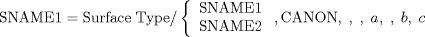

| 3.22. The Canonical Form (CANON) Statement | ||
|---|---|---|
 | Chapter 3. Geometric Statements in APT |  |
| 3.22. The Canonical Form (CANON) Statement | ||
|---|---|---|
| | Chapter 3. Geometric Statements in APT | |
There are two additional methods by which a surface can be defined. Both involve use of the vocabulary word CANON.
The actual geometric canonical form (see Chapter 16) for a given surface can be input directly to the APT processor as follows:
SURF = surface type/ CANON, parameters
where "parameters" represents a complete list of the values representing the geometric canonical form. For example:
S1 = CIRCLE/ CANON, 2, 3, 4, 0, 0, 1, 6
would define S1 as a circle with center at X=2, Y=3, Z=4, axis vector (a circle is a cylinder normal to the XY plane) of X=0, Y=0, Z=1, and a radius=6.
A geometric type can be defined with reference to the geometric canonical form of a previously defined surface of the same type. Further, the canonical form for a given surface can be altered by replacing one or more items in that canonical form. Both of these are accomplished by using the CANON statement.
The general form of the CANON statement is as follows:

SNAME1 is the name of the surface being defined, Surface type is the APT vocabulary word for the surface being defined. SNAME1 or SNAME2 is the symbolic name of the surface being referenced. The rest of the statement is used to reference particular items in the geometric canonical form. The entire statement is interpreted as follows:
The geometric surface SNAME1 is to be defined as equivalent to the canonical form of the referenced surface, except that the third item is the geometric canonical form is to be replaced by the scalar value a, the fifth item is to be replaced by the scalar value b, and the sixth item is to be replaced by the scalar value c.
the following shows a sample use of the CANON statement:
C1 = CIRCLE/ PTA, PTB, PTC C1 = CIRCLE/ C1, CANON, , , , , , , .25
The first statement defines a circle, C1, as passing through the three points PTA, PTB and PTC. The second statement defines a circle, C2, that has the same geometric canonical form as C1, except that the seventh parameter is to be replaced by .25. Section 16.4 indicates that the seventh parameter of the canonical form of a circle is the radius. Therefore, the resultant circle C2 has a radius of .25 and is concentric to the original circle C1 (since the other parameters were not changed).
Certain rules must be observed when using the CANON statement:
The surface type attached to the symbol being defined must be the same as the surface being referenced.
Commas to the right of the APT vocabulary word CANON denote position (they represent a count of the items in the canonical form). Hence, care must be exercised such that the number of positions indicated does not exceed the number of items in the geometric canonical form. (see Chapter 16 for a list of the geometric canonical forms for the allowable APT surface types.)
Any non-empty field to the right of the word CANON may contain a scalar variable, a number, or an expression.
![[Note]](images/note.png) | Note |
|---|---|
The inclusive subscript notation described in Section 2.2.2 may not be used with this type of geometric definitions. |
| |  | |
| 3.21. Nested Definitions |  | 3.23. Additional Geometric Words |